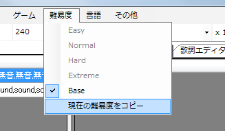

아직 설명하지 않았지만 지금까지 만들고 있던 난이도는 4개의 난이도(easy,normal,hard,extreme) 중 어디에도 들어있지 않은 Base패턴입니다.
Base는 이름 그대로 기초가 되는 부분을 만들기 위한 패턴입니다. 여기서 다른 난이도로 복사한 뒤 노트의 종류를 바꾸거나 난이도를 올릴 수 있도록 만들어 두었습니다.
(역자 주 : EASY 난이도를 먼저 만들고 차근차근 상위 난이도로 복사하면서 난이도를 올리는 방법도 괜찮습니다.)
Base 상태에서는 플레이를 할 수 없으니 일단 어떤 난이도든 복사를 해야 합니다.
Base 난이도를 Normal 난이도로 복사해봅시다.
난이도→현재의 난이도 복사를 선택합니다.

표시된 창에서 Normal을 고른 뒤 OK를 누릅니다.

난이도가 복사 된 뒤에는 Normal 난이도의 패턴을 수정하기 위해서 난이도를 바꿉니다.

현재 난이도는 난이도 메뉴를 보거나 PPDEditor의 제목 표시줄에 노래제목(Normal) - PPDEditor라고 적힌 부분으로 알 수 있습니다.
되돌리기 작업 등에 사용될 히스토리 정보는 난이도를 바꾸면 사라지니 주의해 주세요.
다음으로